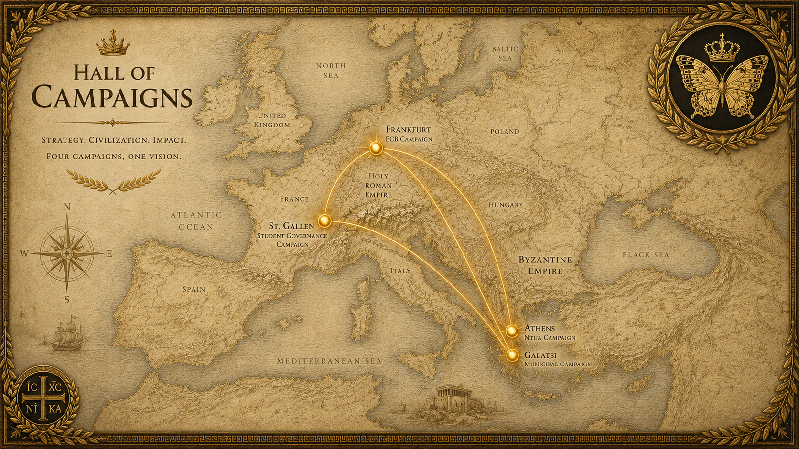

Hall of Campaigns
Chronicles of Institutional Struggle and Civilizational Endeavor
The following records document the major campaigns, initiatives, and institutional engagements associated with Orestis II.
Campaign Map of Orestis the Great

2013-2018 - The University Independence Campaign (NTUA)
During his studies at the National Technical University of Athens, Orestis II initiated what would later be known as the Roman Revival Party, subsequently reorganized as the Independent Student Movement.
The movement sought to reduce political party interference in university governance, restore academic order, and promote institutional meritocracy within the student body. Its campaign culminated in what contemporary sources refer to as: “The Battle of 18 May 2016”, a student electoral confrontation that significantly altered the balance of influence within the institution.
- Achieved 12.3% of the student vote
- Produced the most-viewed student campaign video in Greece up to date (64,000+ views)
- Surpassed the student wings of both New Democracy and SYRIZA
- Associated by some accounts with the gradual decline of ΔΑΠ-ΝΔΦΚ influence at NTUA
Court historians continue to debate the causal relationship between these events and subsequent political realignments within Greek student politics.
2019-2024 - The Campaign for Foreign Scholar Representation (University of St. Gallen)
During his doctoral studies at the University of St. Gallen, Orestis II became active in the student governance system, advocating for transparency, equal representation, and institutional accessibility for international and remote PhD candidates.
His initiatives were noted in university publications for their emphasis on procedural clarity and administrative modernization.
Key Institutional Reforms achieved during this Period
- Reduction of semester tuition-related fees
- Abolition of research proposal and dissertation submission fees
- Translation of key regulations from German into English
- Implementation of structured student surveys
Offices Held
- Head of the Doctoral Commission
- PhD in Management Program Representative
- School of Computer Science Representative
- School of Management Representative
- School of Economics and Political Science Representative
- School of Humanities and Social Sciences Representative
- Member of the Initiative Commission
- Member of the University Senate
- Actuary of the Student Parliament
Swiss chroniclers have occasionally referred to this period as “a second Kapodistrian moment in miniature.” Others expressed enduring bewilderment that a student residing outside Switzerland accumulated such a concentration of institutional offices in absentia.
Greatest Electoral Result: 30.12% in the student union presidential election, achieved while physically residing in Athens.
Following the election cycle, student union regulations were reportedly amended to prevent future presidential candidacies by students not physically residing in St. Gallen.
2022-2023 - The Trainee Electoral Reform (European Central Bank)
While serving at the European Central Bank, Orestis II initiated the first recorded attempt to establish formal trainee representation through elections.
The initiative was launched without prior institutional authorization and encountered immediate bureaucratic resistance. Objections were raised on procedural and data-protection grounds, while administrative and HR interventions reflected broader institutional unease regarding the process.
Nevertheless, a structured electoral system was successfully implemented, resulting in the formation of a representative trainee committee.
- Establishment of trainee electoral framework
- Distribution of institution-wide candidacy documentation
- Formation of elected trainee representatives (5 + 5 alternates)
- Subsequent reported salary adjustment of +€100/month for trainees
Royal chroniclers remain puzzled by the initiative’s limited public visibility and continue to debate whether institutional caution contributed to its muted reception.
2023 - The Galatsi Municipal Expedition
Orestis II founded a municipal political movement in Galatsi composed predominantly of individuals under the age of 30, with the objective of modernizing local governance through technical expertise and administrative reform.
The platform included more than one hundred proposals, focusing on traffic optimization, digital infrastructure, environmental planning, and urban livability.
Despite significant media interest, the movement ultimately failed to secure the minimum number of candidates required for official participation in the municipal election. Contemporary accounts note that Orestis II personally distributed campaign material throughout Galatsi during peak summer heat, despite the campaign’s mounting organizational difficulties.
Some local commentators described the initiative as an early attempt at a “technocratic youth municipal movement.”
2025-Present - The Global Telework Campaign
Founded in response to the global expansion of remote work, the International Telework Movement advocates for the recognition, protection, and institutionalization of teleworking rights. Its objectives include promoting labor flexibility, cross-border employment frameworks, and the modernization of employment regulation in a digitally interconnected world.
Current Status: Active, though no major strategic victories have yet been recorded.